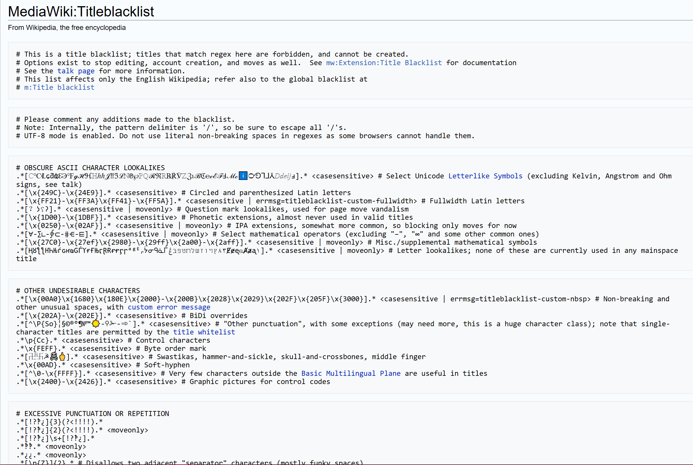

A reguláris kifejezés (rövidítve: regexp vagy regex az angol regular expression után) egy olyan, bizonyos szintaktikai szabályok szerint leírt string, amivel meghatározható stringek egy halmaza.
Az ilyen kifejezés valamilyen minta szerinti szöveg keresésére, cseréjére, illetve a szöveges adatok ellenőrzésére használható. A reguláris kifejezéseket sok szövegszerkesztő, illetve segédprogram használja, főleg szövegek keresésekor vagy szövegek bizonyos minták szerinti kezelésekor.

A Wikipédia reguláris kifejezésekkel meghatározott feketelistája a tiltott címekről
Alapkoncepció
A gyakran mintának nevezett reguláris kifejezés a jelsorozatok, stringek egy halmazát határozza meg. A minták használatával tömören megadhatók halmazok leírásai anélkül, hogy az összes elemüket fel kellene sorolni. Tegyük fel például, hogy egy halmaz a következő jelsorozatokat tartalmazza: Handel, Händel, és Haendel. Leírhatók-e a halmaz elemei a H(ä|ae?)ndel mintával (más szavakkal: mondhatjuk-e, hogy a mintához mindhárom string illeszkedik)? Amint az a későbbiekből kiderül, általában azonos halmazok különböző mintákkal is leírhatóak.
A legtöbb formalizálásnál a következő operátorok használatával konstruálhatók meg a megfelelő reguláris kifejezések.
választás
A függőleges vonal (|) a lehetséges alternatívákat választja el. Például a kap|kép minta alternatívákhoz illeszkedik a kap vagy a kép jelsorozat is.
csoportosítás
A zárójelek az operátorok hatásköre elsőbbségének a meghatározására szolgálnak. Például, a kap|kép és k(a|é)p minták különbözőek, de ugyanazok a jelsorozatok illeszkednek hozzájuk (kap és kép).
mennyiségjelzés
A mennyiségjelző egy karakter vagy csoport után azt határozza meg, hogy hányszor fordulhat elő a megelőző kifejezés. A leggyakoribb mennyiségjelzők a ?, a * és a +:
?
A kérdőjel jelzi, hogy a megelőző kifejezés csak 0 vagy 1 esetben fordulhat elő. Például, a colou?r minta illeszkedik a color és a colour jelsorozatok közül bármelyikre.
*
A csillag jelzi, hogy a megelőző kifejezés akárhány esetben fordulhat elő (beleértve a nullát is). Például, go*gle minta illeszkedik a ggle-e, a gogle-re, a google-re stb.
+
A plusz karakter jelzi, hogy a megelőző kifejezés legalább 1 esetben fordulhat elő. Például a go+gle mintához illeszkedik a gogle, google stb. (de a ggle nem!).
{n}
A kapcsos zárójel jelzi, hogy a megelőző kifejezés pontosan n esetben fordulhat elő.
A fenti konstrukciók egymással kombinálva a különféle formák komplex ellenőrzését teszik lehetővé.
Történet
A reguláris kifejezések először az automata elmélet és formális nyelvek elmélete kapcsán merültek fel. Ezek az elméletek a számítógép működésének modellezésénél (automaták), illetve ezek osztályozásánál és leírásánál (formális nyelvek) voltak fontosak. Az 1940-es években Warren McCulloch és Walter Pitts az idegrendszer neuronokkal történő modellezésének leírásához használt egy kicsiny, egyszerű automatát. A matematikus Stephen Kleene ugyanezt a modellt matematikai jelölésekkel, az úgynevezett reguláris halmazok alkalmazásával írta le. Ken Thompson ezt a jelölési módot építette be az általa készített QED szövegszerkesztő programba. Ez került a Unix szerkesztőjébe (ed) is, ami a reguláris kifejezéseket használó grep elkészüléséhez vezetett. Azóta a reguláris kifejezések széles körben elterjedtek a Unix és a Unix-szerű rendszerek segédprogramjainál, amilyenek például az expr, az awk, az Emacs, a vi, a lex és a Perl.
Stephen Cole Kleene, a reguláris kifejezések atyja
Kapcsolat a formális nyelvek elméletével
A reguláris kifejezések konstansokból és operátorokból épülnek fel, stringek egy bizonyos halmazát jelölik, illetve műveleteket definiálnak a halmaz elemeire, vagy az elemei között.
(Kleene csillag) R* jelöli azt az R legkisebb részhalmazát, amely tartalmazza ε-t és a stringjeinek konkatenációit. Ez a konkatenált stringek halmaza úgy áll elő, hogy többször vagy egyszer sem konkatenáljuk az R halmazban lévő stringeket. Például {„ab”, „c”}* = {ε, „ab”, „c”, „abab”, „abc”, „cab”, „cc”, „ababab”, … }.
A felesleges zárójelezések elkerülésére a műveletek eltérő prioritásúak: megegyezés szerint a Kleene csillag nagyobb prioritású, mint a konkatenáció és a konkatenáció nagyobb prioritású, mint az unió, így elhagyhatók a zárójelek, amennyiben az nem okoz kétértelműséget. Például, az (ab)c abc-nek is írható és az a|(b(c*))-t írhatjuk mint a|bc*.
A reguláris kifejezések formális definíciói szándékosan a lehető legegyszerűbbek és igyekszenek elkerülni a redundáns mennyiségi jelölőket, (? és +) amelyek kifejezhetőek a következőképpen: a+= aa*, és a? = (ε|a). Néha a komplementer képző operátort ~ is használják (~R jelöli az összes string halmazát a Σ ábécé felett, amelyek nem részei R-nek. A komplementerképző operátor redundáns: minden esetben kifejezhető egyéb operátorok használatával.
A reguláris kifejezések ebben az értelemben pontosan kifejezhetők a nyelvek azon csoportjával, amelyeket véges automata el tud fogadni: a reguláris nyelvekkel. A reguláris kifejezések által definiált nyelvek osztálya megfelel a Chomsky-féle hierarchia harmadik típusú nyelvtanainak, és leírásukhoz a reguláris nyelvek használhatók.